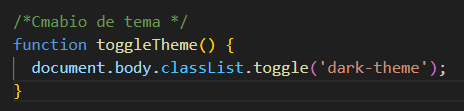
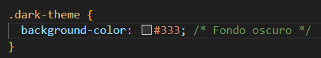
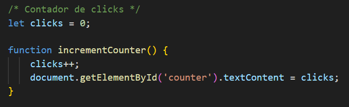

Empecemos por un boton que cambia el tema
En este ejercicio, se utiliza JavaScript para agregar funcionalidad interactiva a un botón que cambia el tema de la página. Se define una función llamada toggleTheme() que se activa cuando se hace clic en el botón.Dentro de la función toggleTheme(), se utiliza document.body.classList.toggle('dark-theme') para alternar la clase dark-theme en el elemento body del documento HTML. En el CSS, se definen reglas de estilo para el tema claro por defecto y para el tema oscuro, utilizando la clase dark-theme.
 0
Contador de clicks
Este ejercicio muestra cómo utilizar JavaScript para realizar un seguimiento del número de clics en un botón y actualizar dinámicamente el contenido de la página con ese valor. Se inicializa una variable llamada clicks en 0 fuera de cualquier función para que sea accesible globalmente. Cuando se hace clic en el botón, se activa la función incrementCounter(), que incrementa el valor de clicks en uno. Luego, la función actualiza el contenido de un elemento HTML con el id counter utilizando document.getElementById('counter').textContent = clicks;, mostrando así el número actual de clics en la página.
Galeria de Imagenes
Este ejercicio crea una galería de miniaturas de imágenes con la capacidad de mostrar una imagen a tamaño completo al hacer clic en una miniatura.
Cada miniatura tiene un atributo onclick que llama a la función showImage() con la URL de la imagen a tamaño completo como argumento.
La función showImage() toma la URL de la imagen a tamaño completo como parámetro y actualiza la src de un elemento con el id fullImage con esa URL, lo que muestra la imagen a tamaño completo.
La imagen a tamaño completo está oculta por defecto (display: none;), y al hacer clic en una miniatura se cambia su estilo para que se muestre (display: block;). Esto se logra cambiando la propiedad style.display del elemento en JavaScript.